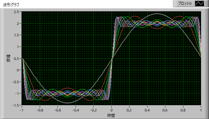

フーリエ級数展開-07
周期や振幅を変えた矩形波を検討していきます．この条件は，ここ，のサイトを参考にしました，ありがとうございます．
・矩形波_01
矩形波，
\( \Large \left\{ \begin{array}{c} \hspace{10pt} -1 \hspace{20pt} ( \color{red}{-1} \leq x < 0) \\ \hspace{20pt} \color{red}{2} \hspace{20pt} (0 \leq x < \color{red}{1}) \end{array} \right. \)
の場合を考えます．
周期が，ーL～L，の場合には，このページ，に記したように，
\( \Large \displaystyle f(x) = \color{red}{\frac{a_0}{2}} + \sum_{n=1}^{ \infty} \left( a_n \ cos \ n \frac{ \pi}{L}x + b_n \ sin \ n \frac{ \pi}{L}x \right) \)
\( \Large \displaystyle a_0 = \color{red}{\frac{1}{L}} \int_{- L}^{ L} f(x) \ dx \)
\( \Large \displaystyle a_n = \frac{1}{L} \int_{ - L}^{ L} f(x) \ cos \ \left( n\frac{ \pi}{L}x \right) \ dx \)
\( \Large \displaystyle b_n = \frac{1}{L} \int_{ - L}^{ L} f(x) \ sin \ \left( n\frac{ \pi}{L}x \right) \ dx \)
となるので，L＝1，となり，
\( \Large \displaystyle f(x) = \color{red}{\frac{a_0}{2}} + \sum_{n=1}^{ \infty} \left( a_n \ cos \ (n \pi x) + b_n \ sin \ (n \pi x) \right) \)
\( \Large \displaystyle a_0 = \int_{- \pi}^{ \pi} f(x) \ dx \)
\( \Large \displaystyle a_n = \int_{ - \pi}^{ \pi} f(x) \ cos \ \left( n \pi x \right) \ dx \)
\( \Large \displaystyle b_n = \int_{ - \pi}^{ \pi} f(x) \ sin \ \left( n \pi x \right) \ dx \)
を計算すればいいことになります．
・a0
積分範囲によって，f(x)の値が異なるので，それぞれの領域の積分に分けていきます．
\( \Large \displaystyle \frac{a_0}{2} = \frac{1}{2} \int_{- 1}^{ 1} f(x) \ dx
= \frac{1}{2 } \left\{ \int_{- 1}^{ 0} (-1) \ dx + \int_{0}^{ 1} (2) \ dx \right\}
= \frac{1}{2 } \left\{ - [ x ]_{- 1}^0 + [2x ]_0^{1}\right\}
= \frac{1}{2 } \left\{ - 1 + 2 \right\} = \color{red}{\frac{1}{2}}
\)
と0ではなくなります．
・an
\( \Large \displaystyle a_n
= \int_{ - 1}^{ 1} f(x) \ cos \ \left( n \pi x \right) \ dx
= \left\{ \int_{- }^{ 0} -cos \ (n \pi x) \ dx + \int_{0}^{ 1} 2 \ cos \ (n \pi x) \ dx \right\} \)
\( \Large \displaystyle = \left\{ \left[ - \frac{1}{n \pi } sin \ (n \pi x) \right]_{- 1}^0 + \left[ \frac{2}{n \pi } sin \ (n \pi x) \right]_0^{ 1} \right\}
\)
sin(0)，sin(nπ)，すべて0となりますので，an=0，となります．
・bn
\( \Large \displaystyle b_n
= \int_{ - 1}^{ 1} f(x) \ sin \ \left( n \pi x \right) \ dx
= \frac{1}{2 \pi} \left\{ \int_{- 1}^{ 0} -sin \ (nx) \ dx + \int_{0}^{ 1} sin \ (nx) \ dx \right\} \)
\( \Large \displaystyle = \left\{ \left[ \frac{1}{n \pi } cos \ (n \pi x) \right]_{- 1}^0 + \left[ -\frac{1}{n \pi } cos \ (n \pi x) \right]_0^{1} \right\} \)
\( \Large \displaystyle = \frac{1}{ n \pi} \left\{ 1 - ( -1 )^n \right\} - \frac{2}{ n \pi} \left\{ ( -1 )^n - 1 \right\} \)
ここでは，ここ，で説明した，三角関数と±１との関係，を使いました．
\( \Large \displaystyle = \frac{3}{ n \pi} \left\{ 1 - ( -1 )^n \right\} \)
この場合，
ｎが偶数：0
ｎが奇数：\( \Large \displaystyle \frac{6}{ n \pi}
\)
となりますので，
\( \Large \displaystyle f(x) = \frac{1}{2} + \frac{6}{ \pi} \left\{ sin \ ( \pi x )+ \frac{1}{3} sin \ (3 \pi x) + \frac{1}{5} sin \ (5 \pi x) + ........ \right\} \)
となります．
グラフで図示すると，

となります．
次は，三角波，です．